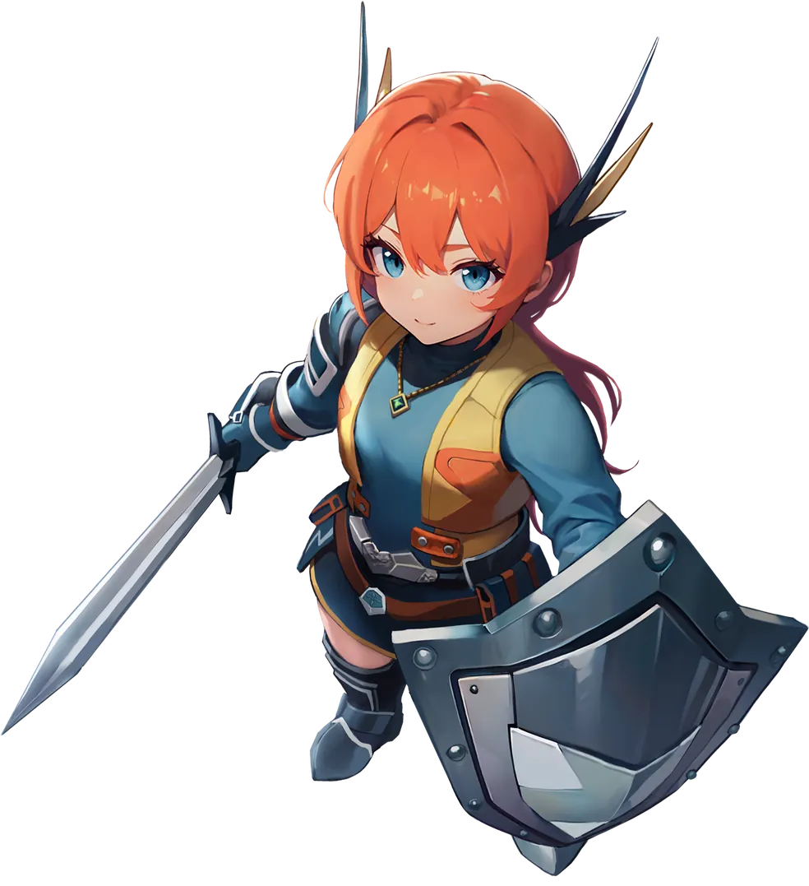

씰M2 직업 추천 5종, 기사 광대 사수 마법사 성직자 내 스타일로 고르는 법 (직업 변경 불가)
10월 22일 정식 출시된 씰M2에서 직업을 고르려는데 어디서부터 봐야 할지 막막하신 분, 특히 처음 시작하는 뉴비분들 많죠? 먼저 하나만 짚고 갈게요. 정식 출시 시점에는 캐릭터를 만들 때 고른 직업을 다른 직업으로 바꾸는 기능이 없습니다.
그래서 이 글은 순위표 대신, 기사·광대·사수·마법사·성직자가 어떤 거리에서 어떤 방식으로 싸우는지부터 하나씩 풀어서 «내 손에 맞는 직업»을 고르는 기준으로 정리했어요. 직업 설명은 출시 전인 9월 9일 공식 포럼에 올라온 소개글 기준이고, 개발 중 버전이라 정식 버전과 일부 다를 수 있다고 공식도 밝혔습니다. 제가 직접 플레이하며 비교한 글이 아니라 공식 소개와 기사를 모아 정리한 글이라는 점도 미리 말씀드려요.
1. 5직업 한눈에 비교
씰M2 직업은 기사, 광대, 사수, 마법사, 성직자 5종이고, 공식 FAQ는 직업마다 전투 방식과 역할이 다르니 플레이 스타일에 맞춰 고르라고 안내합니다.
| 직업 | 대표 무기 | 전투 유형 | 전투 방식 | 궁극기 |
|---|---|---|---|---|
| 기사 | 검과 방패 | 근거리 | 검과 방패를 번갈아 쓰며 공격·방어 전환 | 찬란한 섬광 |
| 광대 | 단검 | 근거리｜원거리 | 중독을 쌓다가 격발, 단일·범위 스킬 전환 | JQKA |
| 사수 | 활 | 원거리 | 강화 공격 게이지를 채우며 꾸준히 속사 | 데드 존 프로토콜 |
| 마법사 | 완드 | 원거리 | 광역 마법과 단계가 오르는 콤보 | 그랑 미티어 사브르 |
| 성직자 | 스태프 | 근거리｜원거리 | 강화 공격 게이지, 회복과 아군 지원 | 생츄어리 |
대표 무기와 전투 유형은 공식 직업 카드 그림에 적힌 표기 그대로예요. 점수나 등급이 아니라 취향을 비교하는 표로 봐 주세요.
2. 고르기 전에 알아둘 3가지
직업을 정하기 전에는 직업 변경 불가, 캐릭터 슬롯 수, 서버 안에서 공유되는 것들 이 세 가지만 확인하면 됩니다.
- 직업 변경 불가 : 공식 FAQ에 따르면 정식 출시 시점에는 생성 때 고른 직업을 다른 직업으로 바꿔 주는 기능을 지원하지 않아요. 선택 전에 직업별 특징을 충분히 살펴 달라는 안내도 같이 붙어 있습니다. 나중에 기능이 생기면 공식 포럼으로 알린다고 해요.
- 캐릭터 슬롯 : 기본 3개이고 슬롯 확장권을 쓰면 최대 5개까지 늘어나요. 확장권은 접속 후 상점의 루비 상점 기타 탭에서 최대 2개까지 추가할 수 있습니다. 캐릭터를 지우려면 10일을 기다려야 하고, 길드에 가입한 캐릭터는 삭제 신청이 안 돼요.
- 서버 안 공유 : 코스튬, 오파츠, 가더는 같은 서버의 모든 캐릭터가 함께 쓰고, 도감 능력치도 서버 내 모든 캐릭터에 적용됩니다.
캐릭터 생성 화면에서 직업을 누르면 그 직업의 소개와 스킬을 볼 수 있다고 하니, 마지막 확인은 거기서 한 번 더 하시면 돼요. 참고로 서버 이전도 안 된다는 FAQ 안내가 있어서, 복귀 유저든 신규든 직업만큼 서버도 신중하게 정하시길 권해요.
3. 기준 ① 거리로 고르기
맨 앞에서 부딪치며 싸우고 싶으면 기사, 거리를 두고 싸우고 싶으면 사수와 마법사 쪽을 먼저 보시면 됩니다.
- 근접 전선 : 기사. 공식 카드도 근거리이고, 소개글은 방어와 공격을 오가며 앞줄에서 버티는 플레이를 즐기는 분께 어울린다고 말해요.
- 순수 원거리 : 사수와 마법사. 두 직업 모두 카드의 전투 유형이 원거리입니다.
- 근거리·원거리 혼합 표기 : 광대와 성직자. 카드에 두 거리가 같이 적혀 있어요.

기사. 전선 한가운데가 제자리입니다
이미지 출처: 씰M2 공식 사이트(직업 소개)
광대는 공식 소개글에 거리 얘기가 따로 없는데, 게임메카 기사(9월 15일)는 중독과 격발을 쓰는 «중거리» 딜러로 소개했어요. 성직자도 카드는 근거리｜원거리인데, 소개글은 후방에서 아군을 지원한다고 적었으니 순수 원거리 서포터로 단정하긴 어려워요.
4. 기준 ② 손에 붙는 전투 방식
소개글 기준으로 씰M2 직업의 손맛은 스위칭, 콤보, 강화 공격 게이지 세 갈래로 나뉩니다.
- 스위칭(기사·광대) : 기사는 검 스킬로 강한 피해를 넣고 방패 스킬로 실드를 얹거나 스턴·슬로우로 적을 묶어요. 광대는 단일 스킬과 범위 스킬을 바꿔 가며 중독을 쌓고, 특정 스킬로 터뜨리면 쌓인 중독에 비례한 큰 피해가 한 번에 들어갑니다.
- 콤보(마법사) : 콤보 스킬은 단계가 오를수록 세지고 마지막 단계에서 피해가 한꺼번에 터져요. 게임메카는 마법사가 스킬을 쓸 때 캐스팅 시간이 필요하다고 전했어요.
- 강화 공격 게이지(사수·성직자) : 일반 공격과 스킬로 게이지를 채우고 가득 차면 강화 공격을 씁니다. 사수는 공격을 끊지 않고 이어 가는 게 핵심이고, 성직자는 미리 정해 둔 강화 공격을 쓰는 구조예요.
공격을 끊지 않고 이어 가는 사수
이미지 출처: 씰M2 공식 사이트(직업 소개)
성직자는 게임메카가 강화 평타에 파티 전체를 회복시키는 효과가 있다고 소개했어요. 이것도 공식 소개글에는 보이지 않는 설명이라 출시 버전에서 직접 확인이 필요합니다.
5. 혼자 할지 파티로 할지, 맡고 싶은 역할
공식 소개글은 직업마다 솔로와 파티에서 어떻게 싸우는지 적어 두었을 뿐, 어느 쪽이 더 유리하다는 등급은 매기지 않았어요.
- 기사 : 솔로와 파티 모두에서 유연하게 움직이는 직업으로 소개돼요.
- 사수 : 혼자일 땐 적이 붙지 못하게 하며 안전하게 쏘고, 파티에선 속사와 차지 샷으로 피해를 몰아 줍니다.
- 마법사 : 혼자일 땐 범위 마법으로 여러 마리를 빠르게 정리하고, 파티에선 콤보로 순간 화력을 냅니다.
- 성직자 : 혼자일 땐 원거리 범위 공격과 자가 회복으로 버티고, 파티에선 아군 상태를 보며 공격할 때와 도울 때를 가려야 효율이 오른다고 해요.
- 광대 : 솔로와 파티를 나눈 서술이 소개글에 따로 없습니다.
맡고 싶은 역할로 줄여 보면 이렇게 갈립니다.
- 막고 제어하며 앞줄을 지키고 싶다면 기사예요. 방패 스킬이 실드와 스턴, 슬로우를 맡아요.
- 한 대상에게 화력을 집중하고 싶다면 사수예요. 소개글 요약이 단일 대상 집중 피해를 내세웁니다.
- 몰려 있는 바일을 한꺼번에 쓸고 싶다면 마법사예요. 광역 마법이 강점이라고 합니다.
- 공격을 흘리다가 결정적인 순간에 터뜨리고 싶다면 광대예요. 회피와 중독 격발이 소개글의 핵심이에요.
- 아군을 돕는 동시에 공격도 하고 싶다면 성직자예요. 후방 지원과 회복이 중심입니다.
직업별 난이도나 파티 수요, 던전 기여도는 공식 자료에 따로 나온 게 없어서 이 글에서는 비교하지 않았어요. 어떤 직업이 파티에 꼭 필요하다는 이야기도 근거가 없어 적지 않습니다.
6. 직업별 한 줄 프로필
직업마다 공식 소개글의 추천 대상 문구를 제 말로 풀어서 한 줄씩 적었고, 궁극기 이름과 효과도 같이 달았습니다.
기사 : 검과 방패를 번갈아 쓰는 근거리 딜러 겸 탱커예요. 궁극기 '찬란한 섬광'은 넓은 범위의 적을 공격하고 아군에게 실드까지 입힙니다. 상황을 보며 방어와 공격을 바꿔 가는 플레이가 취향이라면 기사부터 눌러 보세요.
광대 : 궁극기 'JQKA'는 나이프와 카드를 연달아 던져 피해를 주고 중독까지 확정으로 거는데요, 평소 전투도 단검으로 중독을 쌓다가 스위칭 스킬로 격발시키는 방식입니다. 스킬을 바꿔 가며 결정적인 한 방을 노리는 걸 즐기시나요?

장난스러운 줄무늬 모자 뒤로 중독이 쌓이는 광대입니다
이미지 출처: 씰M2 공식 사이트(직업 소개)
사수 : 빠른 원거리 공격과 강화 공격으로 단일 대상에게 피해를 모읍니다. 궁극기 '데드 존 프로토콜'은 화살이 전방을 관통한 뒤 넓은 범위로 폭발하고요. 쉬지 않고 쏘면서 강화 공격을 계속 터뜨리는 전투라면 잘 맞을 거예요.
마법사 : 광역 마법과 콤보 스킬의 순간 화력이 강점인 원거리 직업이네요. 궁극기 '그랑 미티어 사브르'는 얼음 별이 터지며 범위 안의 적에게 큰 피해와 스턴을 줍니다. 콤보를 쌓고 여러 마리를 한꺼번에 사냥하는 쪽이 끌린다면 마법사입니다.
마법사의 얼굴은 역시 완드와 광역 마법이죠
이미지 출처: 씰M2 공식 사이트(직업 소개)
성직자 : 아군을 보조하며 전투를 매끄럽게 만드는 서포터형 직업입니다. 전투 상황을 살피며 지원과 공격을 함께 가져가고 싶은 분이라면 어울려요. 궁극기 '생츄어리'는 신의 영역을 불러내 적에게 피해를 주고 범위 안 동료의 체력을 회복시킵니다.

스태프를 든 성직자, 회복과 공격을 함께 맡아요
이미지 출처: 씰M2 공식 사이트(직업 소개)
7. 자주 묻는 질문
Q. 같은 직업 캐릭터를 여러 개 만들 수 있나요?
슬롯이 기본 3개에서 최대 5개라는 건 확인했는데, 같은 직업을 중복해서 만들 수 있는지는 공식 FAQ와 가이드에서 찾지 못했어요. 확인 필요 항목이라 캐릭터 생성 화면에서 직접 확인해 보셔야 합니다.
Q. 새 직업이 나오면 선택이 달라지나요?
공식 답변은 신규 직업 추가 가능성을 열어 두고 있다는 정도이고, 종류와 일정은 추후 안내한다고 해요. 확정된 계획은 아직 없으니 새 직업을 기다리며 고르는 건 권하지 않습니다.
Q. 자동 전투가 되는데 직업을 신중하게 골라야 하나요?
공식 FAQ는 자동 전투를 지원하고 PvP·PK 콘텐츠는 출시 시점에 없다고 안내해요. 게임메카는 자동 플레이를 지원하면서도 스킬을 고르고 쓰는 타이밍에 따라 전투 흐름이 달라지게 만들었다고 소개했습니다. 어떤 방식이 손에 맞느냐가 결국 직업 선택의 기준이에요.
참고한 곳 (2026-10-23 기준, 직업 소개글은 2026.09.09 게시분)
· 씰M2 공식 포럼 직업 소개 시리즈 (기사편 183번, 광대·사수·마법사·성직자는 184~187번 글)
· 씰M2 공식 포럼 자주 묻는 질문
· 씰M2 공식 포럼 캐릭터 생성 및 슬롯 가이드
· 씰M2 공식 포럼 공지 (2026년 10월 22일(목) 10:00 정식 서비스 시작)
· 게임메카 기사 (2026.09.15)
▶ 같이 보면 좋은 글
· 모바일 게임 씰M2 사전예약 프리뷰 & 정식 출시일 공개!
· 캐쥬얼 모바일MMORPG 씰M 2차 전직 140레벨 확장 대규모 업데이트 할만한게임